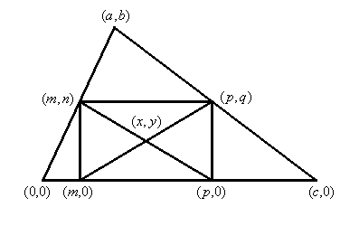
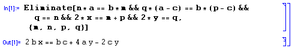

76.- Hallar un lugar geométrico.
Problema 76
| Hallar el lugar geométrico de los centros de los rectángulos inscritos en un triángulo de lados 7 cm, 5 cm, y 3 cm. |
Sánchez, G. (1995): Conferencia en las VII Jornadas Andaluzas de Educación Matemática Thales. De la Fuente, M. y Torralbo, M. (Eds.): Cultura y Matemáticas. Servicio de Publicaciones de la Universidad de Córdoba. SAEM Thales. (p38)
Solución del profesor Nicolás Rosillo Dpto. Matemáticas, IES Máximo Laguna (Santa Cruz de Mudela, Ciudad Real)


Que es la ecuación de la recta que pasa por y como fácilmente puede comprobarse
, por lo que el lugar geométrico pedido es el segmento de extremos
. y .
.